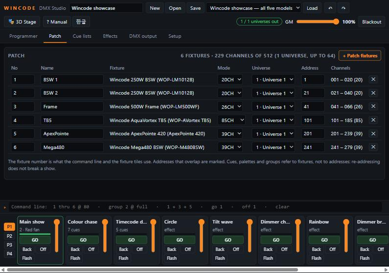
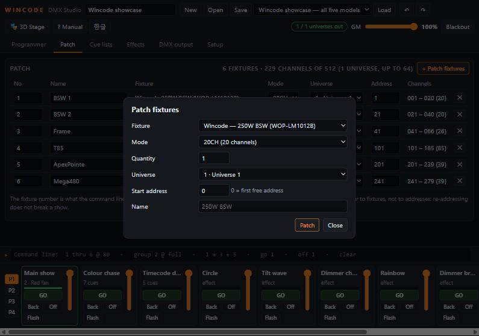
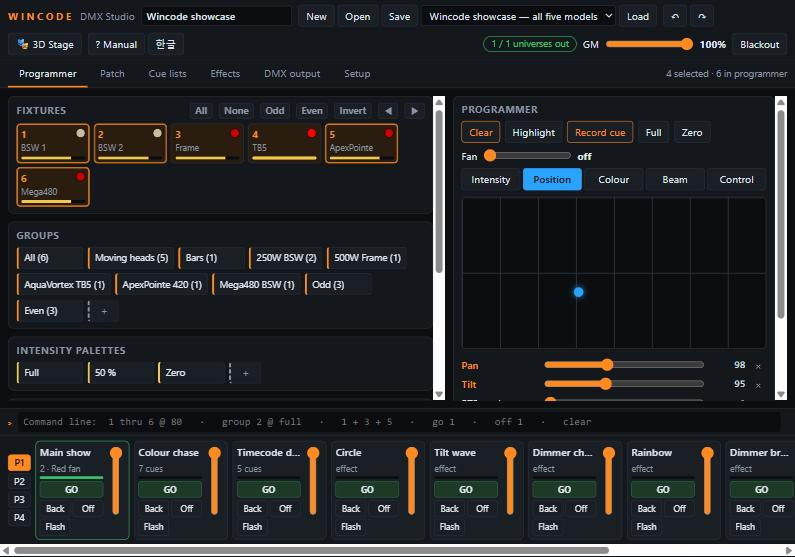
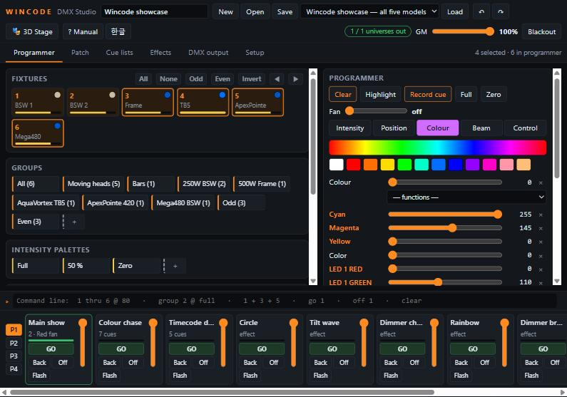
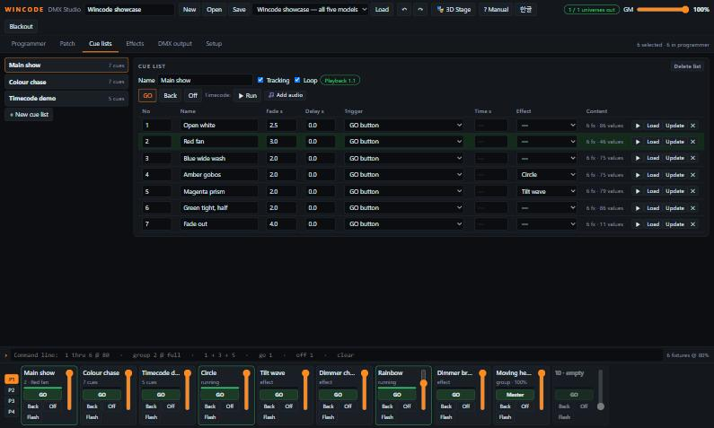
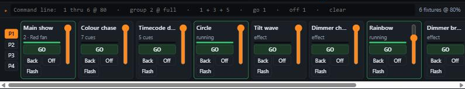

Wincode DMX Studio 사용 설명서 · 브라우저에서 동작하는 조명 콘솔
화면의 버튼과 메뉴는 영문으로 표시됩니다. 이 설명서에서는 화면에 보이는 이름을 그대로(예: Record cue) 적고 우리말로 설명합니다.
1. DMX Studio란
DMX Studio는 웹 브라우저에서 동작하는 조명 콘솔입니다. 조명 기기를 패치하고, 프로그래머에서 장면을 만들고, 그것을 그룹·팔레트·큐로 저장하고, 이펙트를 더한 뒤 페이더로 재생합니다. 작업 방식은 grandMA, ChamSys MagicQ, Avolites Titan, ETC Eos, Onyx 같은 전문 콘솔과 같아서, 여기서 익힌 방법을 그대로 다른 콘솔에 쓸 수 있습니다.
만들어진 DMX 신호는 가상 DMX 케이블로 Wincode 3D 시뮬레이터에 보내거나, Art-Net·sACN·DMX USB Pro로 실제 기기에 보냅니다. 쇼는 512채널 1유니버스에서 시작하고 64유니버스(32,768채널)까지 늘릴 수 있습니다.

| 주소 | 내용 |
|---|---|
| samcho93.github.io/wincodeDmxStudio | DMX Studio (설치 없이 사용) |
| samcho93.github.io/wincodeMovingHead/stage.html | 스튜디오가 제어하는 3D 스테이지 |
Chrome 또는 Edge를 사용하세요. Web Serial(DMX USB Pro)과 Web MIDI는 일부 브라우저에서 지원되지 않습니다.
2. 빠른 시작
DMX Studio를 처음 열면 예제 Wincode showcase가 불러와집니다. 기기 6대, 팔레트, 큐 리스트 3개, 이펙트 5개, 플레이백 한 페이지가 들어 있습니다. 5분만 만져 보면 전체 작업 방식을 알 수 있습니다.
- 3D 스테이지 열기. 상단 바의 🎭 3D Stage를 누릅니다. 기기 6대가 놓인 두 번째 창이 열리고, 이때부터 콘솔을 따라 움직입니다. 두 창을 나란히 놓으세요.
- 큐 리스트 재생. 아래쪽 Main show 플레이백의 GO를 누릅니다. 기기들이 큐 1로 페이드됩니다. GO를 다시 누르면 큐 2, 그다음 큐로 넘어갑니다.
- 손으로 제어. 명령줄에
1 thru 6 @ 50을 입력하고 Enter를 누릅니다. 6대 모두 50%가 됩니다. 손으로 준 값은 프로그래머에 들어가며 플레이백보다 우선합니다. - 팔레트 사용. 컬러 팔레트 Blue를 클릭합니다. 기기마다 자기 방식으로 파란색이 됩니다 — 어떤 기기는 컬러휠, 어떤 기기는 CMY, 바는 RGB로.
- 저장. Record cue를 누르면 지금 장면이 현재 큐 리스트의 다음 큐로 저장됩니다.
- 놓아주기. Clear(또는 Esc)를 누릅니다. 프로그래머가 비워지고 다시 플레이백이 제어합니다.
3. 화면 구성
| 영역 | 내용 |
|---|---|
| 상단 바 | 쇼 이름 · New / Open / Save · 예제 목록과 Load · 실행 취소 / 다시 실행 · 3D Stage · Manual · 출력 상태 · 그랜드 마스터(GM) · Blackout |
| 탭 | Programmer · Patch · Cue lists · Effects · DMX output · Setup. 오른쪽에는 선택된 기기 수와 프로그래머에 들어 있는 기기 수가 표시됩니다. |
| 작업 영역 | 선택한 탭의 내용. |
| 명령줄 | 글자로 입력하는 명령(12장). 결과가 오른쪽에 표시됩니다. |
| 플레이백 | 페이더 10개씩 4페이지(P1–P4). 어느 탭에서든 항상 보입니다. |
상단 바의 알약 모양 표시는 출력 상태입니다. 초록색 1 / 1 universes out은 출력 라인이 지정된 유니버스가 모두 송신 중이라는 뜻이고, 빨간색이면 무엇이 빠졌는지(브리지 오프라인, 시리얼 미연결) 알려 줍니다.
4. 패치
패치는 어느 기기가 어느 DMX 주소에 있는지를 정합니다. 선택·팔레트·큐 등 나머지는 모두 주소가 아니라 기기를 가리키므로, 주소를 바꿔도 쇼가 깨지지 않습니다.

| 열 | 의미 |
|---|---|
| No | 기기 번호. 명령줄과 기기 타일에서 쓰는 번호이며 중복될 수 없습니다. |
| Name | 자유롭게 붙이는 이름. 타일에 표시됩니다. |
| Fixture / Mode | 기기 프로파일과 채널 모드. 모드를 바꾸면 차지하는 채널 수가 달라집니다. |
| Universe / Address | 첫 채널의 위치(1–512). |
| Channels | 시작–끝 주소와 채널 수. 빨간 overlap은 두 기기의 주소가 겹치거나 512를 넘는다는 표시입니다. |
| ✕ | 패치에서 삭제(모든 그룹에서도 빠집니다). |
기기 패치하기

- + Patch fixtures를 누릅니다.
- 기기와 모드를 고릅니다. 모드마다 채널 수가 함께 표시됩니다.
- 수량(Quantity)을 입력합니다. Start address를 0으로 두면 비어 있는 첫 주소가 자동으로 잡힙니다.
- Patch를 누릅니다. 기기 번호는 가장 큰 번호 다음부터 매겨지고, 주소는 차례로 이어서 배정됩니다.
5. 기기 선택
항상 먼저 선택하고, 그다음 값을 줍니다. 선택에는 순서가 있습니다 — 기기를 고른 순서이며, Fan과 이펙트가 이 순서를 사용합니다.
| 방법 | 동작 |
|---|---|
| 타일 클릭 | 그 기기 하나만 선택합니다. |
| Ctrl 또는 Shift + 타일 클릭 | 선택에 추가하거나 선택에서 뺍니다. |
| All None Odd Even Invert | 전체, 선택 없음, 하나 건너 하나(홀수 번째 / 짝수 번째), 선택 반전. |
| ◀ ▶ 또는 ← → | 이전 / 다음 기기 — 포커싱할 때 한 대씩 넘깁니다. |
| 그룹 클릭 | 그 그룹의 기기를 선택합니다. Ctrl + 클릭은 추가. |
| 명령줄 | 1 thru 6, 1 + 3 + 5, group 2, 6 thru 1(역순). |
타일에는 기기 번호, 이름, 밝기를 나타내는 노란 막대, 현재 색을 나타내는 점이 있습니다. 주황색 테두리는 선택됨, 갈색 배경은 프로그래머에 값이 들어 있음을 뜻합니다.
6. 프로그래머
프로그래머는 오퍼레이터의 손입니다. 여기서 준 값은 바로 출력으로 나가고, 비우기 전까지 모든 플레이백보다 우선합니다. 팔레트와 큐에 저장되는 것도 프로그래머의 내용입니다.
속성은 콘솔과 같이 다섯 그룹으로 나뉩니다.
| 그룹 | 속성 |
|---|---|
| Intensity (밝기) | 디머 |
| Position (위치) | 팬, 틸트, 팬/틸트 속도 |
| Colour (색) | 컬러휠, CMY, RGB, CTO, 컬러 매크로 |
| Beam (빔) | 셔터/스트로브, 줌, 포커스, 고보, 프리즘, 프로스트, 프레이밍 블레이드 |
| Control (제어) | 리셋, 램프 등 서비스 채널 |
Intensity — 밝기

속성마다 슬라이더, 값(0–255), 그리고 프로그래머에서 그 속성만 놓아주는 ×가 있습니다. Full과 Zero는 선택한 기기의 디머를 한 번에 최대/0으로 만듭니다. 셔터는 기본값이 열림이어서 디머만 올리면 빛이 나옵니다.
Position — 위치

패드 안을 드래그하면 선택한 기기가 움직입니다. 미세(fine) 채널이 있는 기기는 자동으로 16비트로 구동되므로 fine 채널을 직접 건드릴 필요가 없습니다.
Colour — 색

색상 막대와 견본은 혼색이 가능한 모든 기기에 적용됩니다. RGB 기기에는 RGB 값을, CMY 기기에는 그에 맞는 CMY 값을 스튜디오가 알아서 보냅니다. 컬러휠만 있는 기기는 Colour 슬라이더나 그 아래 기능 목록을 사용합니다.
Beam과 기능 목록

고보휠·셔터·프리즘처럼 한 채널이 여러 기능을 하는 경우, 슬라이더 아래에 — functions — 목록이 있습니다. 기기 설명서에서 가져온 것으로, 항목을 고르면 그 범위 안의 값이 설정됩니다.
Fan, Highlight, Clear
| 기능 | 동작 |
|---|---|
| Fan | Fan을 예를 들어 ±30으로 두고 값을 주면 선택한 기기들에 값이 펼쳐집니다. 첫 기기는 30만큼 작게, 마지막 기기는 30만큼 크게, 사이는 균등하게. 팬에 적용하면 빔이 부채꼴로 벌어집니다. 사용 후에는 슬라이더를 off로 돌려 놓으세요. |
| Highlight (H) | 켜져 있는 동안 선택한 기기가 최대 밝기가 됩니다 — 지금 어느 기기를 만지고 있는지 확인하는 용도입니다. 저장되지는 않습니다. |
| 속성의 × | 그 속성만 프로그래머에서 놓아줍니다. |
| Clear (Esc) | 한 번 누르면 프로그래머를 비우고, 한 번 더 누르면 선택을 해제합니다. |
| Record cue (R) | 프로그래머 내용을 다음 큐로 저장합니다(8장). |
7. 그룹과 팔레트
그룹과 팔레트는 프로그래밍을 빠르게 해 주는 기본 재료입니다. 한 번 만들어 두면 클릭만으로 큐를 만들 수 있습니다.
그룹
- 저장: 기기를 선택하고 Groups 풀 끝의 점선 +를 클릭합니다.
- 사용: 그룹을 클릭합니다(Ctrl + 클릭은 선택에 추가). 기기의 순서도 그대로 유지됩니다.
- 편집: 우클릭 → 이름 변경, Update from selection(현재 선택으로 갱신), 삭제.
팔레트
종류별로 풀이 하나씩 있습니다: 밝기, 위치, 색, 빔. 팔레트는 기기별로 그 종류의 값을 담고 있으며, 같은 기종·같은 모드의 다른 기기에도 적용됩니다. 그래서 Mega480 한 대로 만든 컬러 팔레트는 모든 Mega480에서 동작합니다.
- 저장: 프로그래머에서 값을 준 뒤 해당 종류 풀의 +를 클릭합니다. 그 종류의 값만 저장됩니다.
- 적용: 기기를 선택하고 팔레트를 클릭합니다. 값이 프로그래머로 들어갑니다.
- 편집: 우클릭 → 이름 변경, Update from programmer(프로그래머 값으로 갱신), 삭제.

8. 큐 리스트
큐 리스트는 장면을 순서대로 늘어놓은 것입니다. 큐 하나는 프로그래머의 값과 페이드 시간을 담고, GO를 누를 때마다 다음 큐로 넘어갑니다.

큐 저장하기
- Cue lists 탭에서 저장할 리스트를 클릭합니다(없으면 스튜디오가 Main을 만들어 줍니다).
- 프로그래머에서 장면을 만듭니다.
- Record cue(R)를 누릅니다. 큐가 맨 끝에 2초 페이드로 추가됩니다. 리스트가 아직 플레이백에 없으면 비어 있는 첫 플레이백에 올라갑니다.
- Clear를 누르고 다음 장면을 만듭니다.
큐 표
| 열 | 의미 |
|---|---|
| No | 큐 번호. 소수도 가능합니다(2.5는 2와 3 사이). 번호순으로 자동 정렬됩니다. |
| Fade s | 이 큐로 페이드되는 시간(초). |
| Delay s | GO를 누른 뒤 페이드가 시작되기까지 기다리는 시간. |
| Trigger | GO button: 누를 때까지 기다림. Follow: 앞 큐의 페이드가 끝나면 바로 시작. Wait: 그 뒤 지정한 초가 지나면 시작. |
| Time s | 타임코드(9장). 비워 두면 시간으로 실행되지 않습니다. |
| Effect | 이 큐가 활성인 동안 함께 도는 이펙트(10장). |
| Content | 큐에 들어 있는 기기 수와 값 개수. |
| ▶ | 이 큐로 바로 이동. |
| Load | 큐를 프로그래머로 불러와 수정할 수 있게 합니다. |
| Update | 프로그래머 내용을 이 큐에 합칩니다. |
| ✕ | 큐 삭제. |
트래킹(Tracking)
Tracking이 켜져 있으면(기본값, 극장용 콘솔 방식) 큐에는 바뀌는 것만 있으면 됩니다. 앞 큐가 준 값은 뒤 큐가 바꾸기 전까지 그대로 유지됩니다. 그래서 “Red fan” 큐에는 색과 위치만 있어도 큐 1의 밝기가 이어집니다. Tracking을 끄면 큐가 각각 독립이 되어, 큐에 없는 값은 기본값으로 돌아갑니다.
루프(Loop)
Loop가 켜져 있으면 마지막 큐에서 GO를 누를 때 첫 큐로 돌아갑니다. 큐들의 트리거가 Wait인 루프 리스트는 저절로 도는 체이스가 됩니다 — 예제의 Colour chase가 그렇게 만들어져 있습니다.
큐 수정하기
- 큐의 Load를 누릅니다.
- 프로그래머에서 원하는 것을 바꿉니다.
- 같은 큐의 Update를 누르고 Clear를 누릅니다.
9. 타임코드와 오디오
큐 리스트를 시계에 맞춰 실행할 수 있습니다. 큐마다 시작부터의 시간(초)을 Time에 넣고 ▶ Run을 누르면, 큐가 제 시간에 스스로 실행됩니다.

- 🎵 Add audio로 음악 파일을 붙입니다. 실행할 때 함께 재생되고, 음악이 시계가 되어 조명이 음악과 어긋나지 않습니다.
- 오디오 파일은 이 브라우저에만 저장되며 쇼 파일에는 들어가지 않습니다. 다른 컴퓨터에서는 다시 추가해야 합니다.
- 실행 중에는 플레이백에 경과 시간이 표시됩니다. ■ Stop으로 멈춥니다.
10. 이펙트
이펙트는 값을 고정해 두지 않고 계속 만들어 냅니다: 디머 체이스, 원 그리기, 무지개 등.

| 항목 | 의미 |
|---|---|
| Type | Dimmer(디머) · Pan · Tilt · Pan / tilt circle(원) · Pan / tilt figure 8(8자) · Colour rainbow(무지개) · Zoom · Focus |
| Wave | 한 주기의 모양: sine, triangle, ramp up, ramp down, square, pulse, chase(한 대씩 차례로), random. |
| Rate | 분당 주기 수. Tap을 박자에 맞춰 두 번 누르면 그 속도로 설정됩니다. |
| Size | 값이 흔들리는 폭(DMX 단계). |
| Centre | 디머 이펙트 전용: 흔들림의 중심 레벨. |
| Spread | 기기 사이의 위상차. 0 = 모두 동시에, 360 = 선택 전체에 걸쳐 파도 한 개, 720 = 두 개. |
| Direction | 정방향(forward) 또는 역방향(backward). |
| Fixtures | Use the selection은 현재 선택을 그 순서대로 가져옵니다. |
위치·줌·포커스 이펙트는 기기가 이미 가진 값을 중심으로 움직이므로, 같은 원 이펙트가 기기가 어디를 향하든 그대로 동작합니다. 디머와 무지개 이펙트는 값을 직접 정합니다.
이펙트 만들고 실행하기
- 기기를 선택합니다.
- + New effect를 누르고 종류를 정합니다.
- ▶ Run을 누르면 이펙트가 비어 있는 플레이백에 올라가 시작됩니다. 페이더가 크기를 조절합니다.
이펙트를 큐의 일부로 만들려면 큐 표의 Effect 열에서 고릅니다. 그 큐가 활성인 동안 이펙트가 돌아갑니다.
11. 플레이백
쇼는 플레이백으로 진행합니다. 10개씩 4페이지가 있고, 플레이백 하나에는 큐 리스트, 이펙트, 그룹 마스터 중 하나가 들어갑니다.

| 조작 | 동작 |
|---|---|
| GO | 큐 리스트: 다음 큐. 이펙트: 시작. |
| Back | 이전 큐로, 짧은 페이드로 돌아갑니다. |
| Off | 플레이백을 놓습니다: 그 값들이 무대에서 빠집니다. |
| Flash | 누르고 있는 동안 페이더와 관계없이 최대. 꺼져 있던 플레이백은 누르는 동안만 켜집니다. |
| 페이더 | 큐 리스트: 이 플레이백의 밝기. 이펙트: 크기. 그룹 마스터: 그 그룹의 밝기 한도. 페이더를 0에서 올리면 플레이백이 시작되고, 0으로 내리면 놓입니다. |
| P1–P4 | 플레이백 페이지. |
플레이백 지정하기

이름(또는 empty)을 클릭합니다. 무엇을 실행할지 — Cue list, Effect, Group master — 와 항목을 고르고 Assign을 누릅니다. Clear는 그 자리를 비웁니다.
그랜드 마스터와 블랙아웃
GM은 전체 기기의 밝기 채널을 한꺼번에 조절합니다. Blackout(B)은 모든 밝기를 즉시 0으로 만듭니다. 위치·색·고보는 계속 진행되므로 해제하는 순간 장면이 그대로 돌아옵니다.
12. 명령줄
Enter를 누르면 명령줄로 이동합니다. 입력하고 다시 Enter를 누릅니다.
| 입력 | 결과 |
|---|---|
1 thru 6 | 기기 1~6 선택 (t, -, >도 같은 뜻) |
6 thru 1 | 같은 기기를 역순으로 선택 |
1 + 3 + 5 | 기기 1, 3, 5 선택 |
group 2 또는 g 2 | 풀의 두 번째 그룹 선택 |
1 thru 6 @ 80 | 선택하고 밝기를 80%로 |
group 2 @ full | 그룹 2를 100%로 |
@ 30 | 현재 선택을 30%로 |
go 1 · back 1 · off 1 | 현재 페이지의 플레이백 1에 GO / Back / Off |
clear | Clear 버튼과 같음 |
13. DMX 출력 모니터

모니터는 모든 합성과 그랜드 마스터를 거친 뒤 지금 실제로 선로에 나가는 값을 보여 줍니다. 오른쪽 위에서 유니버스를 고릅니다. 칸에 마우스를 올리면 그 채널이 어느 기기의 어떤 기능인지 나옵니다. 패치를 점검하거나 기기가 반응하지 않는 이유를 찾을 때 사용하세요.
14. 유니버스와 출력 라인

유니버스마다 자기 라인으로 송신됩니다.
| 라인 | 용도 | 필요한 것 |
|---|---|---|
| Off | 준비만 해 두는 유니버스 | — |
| Virtual DMX cable (가상 DMX 케이블) | Wincode 3D 시뮬레이터 | 두 페이지를 같은 사이트에서 열어야 합니다(15장). Universe는 시뮬레이터가 듣는 케이블 유니버스이며 첫 번째가 0입니다. |
| Art-Net | Art-Net 노드와 기기 | 브리지. Universe는 Art-Net 포트 주소(0부터), Host는 노드의 IP, 브로드캐스트 주소, 또는 127.0.0.1. |
| sACN / E1.31 | sACN 노드와 기기 | 브리지. Universe는 1–63999, Host는 IP 주소 또는 multicast. |
| DMX USB Pro | ENTTEC 호환 USB 장치로 유니버스 하나 | Chrome 또는 Edge. Connect…를 누르고 포트를 고릅니다. |
브리지
웹 페이지는 네트워크 패킷을 직접 보낼 수 없기 때문에, Art-Net과 sACN은 페이지와 통신하는 작은 프로그램 — 브리지 — 를 거칩니다. 아래 둘 중 어느 것이든 브리지가 됩니다.
- Wincode 시뮬레이터 서버:
ws://127.0.0.1:7740/ws - DMX Studio 자체 서버(프로젝트 폴더에서
npm start):ws://127.0.0.1:7750/ws
주소를 Lines → Bridge에 입력합니다. 유니버스를 Art-Net이나 sACN으로 설정하고 브리지가 응답하면 옆의 표시가 connected로 바뀝니다.
유니버스 늘리기
+ Universe는 512채널씩 추가하며 64개까지 가능합니다. 마지막 유니버스는 패치된 기기가 없을 때 ✕로 지울 수 있습니다.
MIDI

Control the playbacks from a MIDI surface를 체크하고, 브라우저가 물으면 MIDI 접근을 허용합니다. 매핑은 고정이며(18장) 현재 플레이백 페이지에 적용됩니다.
15. 3D 시뮬레이터 연동
DMX Studio와 Wincode 시뮬레이터는 하나처럼 동작하는 두 프로그램입니다. 스튜디오가 콘솔이고, 시뮬레이터의 스테이지가 무대입니다.

- DMX Studio에서 Wincode 기기를 패치합니다(또는 예제를 불러옵니다).
- 🎭 3D Stage를 누릅니다. 스튜디오가 패치를 스테이지 페이지에 넘기고 엽니다. 같은 기기가 같은 주소로 스테이지에 나타납니다.
- 스튜디오에서 작업합니다. 스테이지는 자기 쇼를 재생하지 않는 동안 가상 DMX 케이블을 따라갑니다.
시뮬레이터 쪽에서는 🎚 DMX Studio 버튼으로 스튜디오를 엽니다.
- 웹에서: 둘 다
samcho93.github.io에 있으므로 따로 할 일이 없습니다. - 내 컴퓨터에서: 시뮬레이터를 실행하고(그 폴더에서
npm start) 스튜디오를http://127.0.0.1:7740/studio/로 엽니다. 시뮬레이터 서버가 옆 폴더의 스튜디오를 함께 서비스합니다. - 그 밖의 경우: Setup → Download stage file로 스테이지 파일을 받아 스테이지 페이지에서 열고, 브리지를 통해 Art-Net으로 보냅니다.
패치를 바꾼 뒤에는 🎭 3D Stage를 다시 눌러 새 패치를 넘겨 주세요. Generic(범용) 기기는 3D 모델이 없어 스테이지에 나타나지 않습니다.
16. 쇼 파일, 실행 취소, 예제
| 버튼 | 동작 |
|---|---|
| Save | 쇼를 이름.wdx.json 파일로 내려받습니다. |
| Open | 쇼 파일을 엽니다. |
| New | 유니버스 하나짜리 빈 쇼를 시작합니다. |
| Load (예제 목록 옆) | 선택한 예제로 쇼를 바꿉니다. |
| ↶ ↷ | 실행 취소와 다시 실행, 최대 60단계(Ctrl+Z, Ctrl+Y). New·Open·Load도 취소할 수 있습니다. |
쇼는 바꿀 때마다 브라우저에도 저장되어 페이지를 다시 열면 그대로 돌아옵니다. 다만 이 사본은 이 컴퓨터의 이 브라우저에만 있습니다 — 보관할 것은 반드시 Save로 파일로 남기세요.
예제
| 예제 | 구성 |
|---|---|
| Wincode showcase — all five models | 250W BSW 2대, 500W Frame, AquaVortex TB5, ApexPointe 420, Mega480 (229채널) |
| 250W BSW × 4 · 500W Frame × 4 · ApexPointe 420 × 4 · Mega480 × 4 | 한 기종 4대 |
| AquaVortex TB5 × 2 | 바 2대, 헤드 10개 |
| Large rig — 48 fixtures, 5 universes | Mega480 16대, ApexPointe 420 16대, TB5 8대, BSW 8대 (2088채널) |
모든 예제에는 그룹, 팔레트 한 벌, 큐 리스트 Main show·Colour chase·Timecode demo, 이펙트, 플레이백 1페이지가 들어 있습니다.
17. 조명 라이브러리
| Wincode 기기 | 모드 | 특징 |
|---|---|---|
| 250W BSW (WOP-LM1012B) | 17CH · 20CH | 컬러휠, 고보휠 2개, 3면 프리즘, 줌 6–26° |
| 500W Frame (WOP-LM500WF) | 26CH | CMY, CTO, 컬러휠, 프레이밍 블레이드 4개, 줌 6–48° |
| ApexPointe 420 | 39CH | CMY, 13색 컬러휠, 고보휠 2개, 프리즘휠 2개, 연속 팬 회전 |
| Mega480 BSW (WOP-M480BSW) | 34CH · 39CH | CMY, 컬러휠, 고보휠 2개, 프리즘휠 2개 |
| AquaVortex TB5 (WOP-AVortex TB5) | 21 · 41 · 71 · 75 · 85 · 170CH | 바 위의 헤드 5개, RGBL, 픽셀 링 |
범용 프로파일: Dimmer · RGB · RGBW · RGBAW + UV · Moving Head Spot · Moving Head Wash · Moving Head CMY · Scanner · Dimmer pack(2–48채널).
Wincode 프로파일에는 채널별 기능표와 기본값이 기기 설명서를 바탕으로 들어 있습니다. TB5처럼 헤드가 여러 개인 기기는 속성을 주면 모든 헤드에 적용되고, 이펙트는 헤드 하나하나를 별개의 기기처럼 다룹니다.
18. 단축키와 MIDI
| 키 | 동작 |
|---|---|
| Esc | Clear (프로그래머, 그다음 선택) |
| H | Highlight 켜기 / 끄기 |
| F | 선택한 기기를 최대 밝기로 |
| R | 큐 저장 (Record cue) |
| B | Blackout 켜기 / 끄기 |
| Space | 플레이백 1의 GO |
| 1 … 9, 0 | 플레이백 1 … 9, 10의 GO |
| ← → | 이전 / 다음 기기 |
| Ctrl+A | 전체 선택 |
| Ctrl+Z / Ctrl+Y | 실행 취소 / 다시 실행 |
| Enter | 명령줄로 이동 |
단축키는 입력 칸에 커서가 없을 때 동작합니다.
| MIDI 메시지 | 동작 (현재 플레이백 페이지) |
|---|---|
| 컨트롤 체인지 1–10 | 플레이백 페이더 1–10 |
| 컨트롤 체인지 11 | 그랜드 마스터 |
| 노트 36–45 | 플레이백 1–10의 GO |
| 노트 46–55 | 플레이백 1–10의 Flash (노트를 누르고 있는 동안) |
19. 값이 합쳐지는 순서
같은 채널을 여러 곳에서 동시에 제어하려 할 수 있습니다. 스튜디오는 아래 순서로, 아래로 갈수록 우선해서 결정합니다.
- 기본값. 아무것도 제어하지 않는 채널은 기본값에 머뭅니다: 셔터 열림, 팬·틸트 중앙, 나머지는 0.
- 플레이백. 밝기는 실행 중인 플레이백 중 가장 높은 값이 이기고(HTP), 각각 자기 페이더만큼 줄어듭니다. 그 밖의 속성은 가장 나중에 시작한 플레이백이 이깁니다(LTP).
- 이펙트가 그 위에 작용합니다.
- 프로그래머가 위의 모든 것보다 우선합니다.
- Highlight가 선택한 기기를 최대로 만듭니다.
- 그룹 마스터가 자기 그룹의 밝기를 제한합니다.
- 그랜드 마스터와 블랙아웃이 모든 밝기를 조절합니다.
20. 문제 해결
| 증상 | 확인할 것 |
|---|---|
| 3D 스테이지가 반응하지 않는다 | 두 페이지를 같은 사이트에서 열었는지(15장), 유니버스의 라인이 Virtual DMX cable인지 확인하세요. 스테이지가 자기 쇼를 재생 중이면 Stop을 누릅니다. 패치를 바꿨다면 🎭 3D Stage를 다시 누릅니다. |
| 플레이백은 도는데 빛이 없다 | 페이더가 올라가 있는지, 그랜드 마스터가 올라가 있고 Blackout이 꺼져 있는지, 그룹 마스터가 내려가 있지 않은지 확인하세요. 프로그래머가 디머를 0으로 잡고 있으면 Clear를 누릅니다. |
| 큐가 어떤 값을 바꾸지 못한다 | 프로그래머가 그 속성을 아직 잡고 있습니다(주황색). Clear를 누르세요. |
| 큐가 지나도 값이 남아 있다 | 트래킹 때문입니다. 뒤 큐에서 그 값을 바꾸거나, 리스트의 Tracking을 끄세요. |
| 출력 표시가 빨간색이다 | “bridge offline”: 브리지 주소가 틀렸거나 브리지 프로그램이 실행 중이 아닙니다. “serial not connected”: Setup에서 Connect…를 누르세요. |
| 팔레트가 어떤 기기에는 듣지 않는다 | 그 기종에 대한 값이 팔레트에 없습니다. 팔레트를 만든 기종에 적용하거나, 그 기기를 프로그래머에 넣고 다시 저장하세요. |
| 패치에 “overlap”이 뜬다 | 두 기기의 주소가 겹치거나 512를 넘습니다. 주소를 바꾸거나 다른 유니버스로 옮기세요. |
| 다시 열었더니 쇼가 없다 | 브라우저 사본은 한 컴퓨터의 한 브라우저에만 있고, 사이트 데이터를 지우면 사라집니다. Save로 파일을 보관하세요. |
| 타임코드 실행에 소리가 없다 | 오디오 파일은 브라우저별로 저장됩니다. 이 컴퓨터에서 🎵로 다시 추가하세요. |
Wincode DMX Studio · github.com/samcho93/wincodeDmxStudio